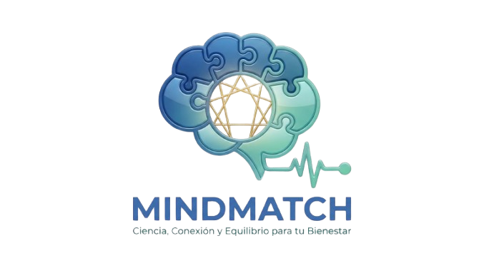

MindMatch
Trabajo de Fin de Grado (TFG) alojado con dominio propio. Plataforma web de terapia inteligente que revoluciona el emparejamiento entre pacientes y terapeutas utilizando algoritmos de perfilado psicológico como base científica y de autoconocimiento.
-
Algoritmo de Matching: Test dinámico y asíncrono que calcula el perfil psicológico y los rasgos dominantes para conectar perfiles idóneos.
-
Arquitectura Desacoplada: Frontend de alto rendimiento con Angular 18 (Signals) y API asíncrona robusta con FastAPI (Python).
-
Grado de Producción: Seguridad JWT, contenedorización Docker, control de versiones DB con Alembic y tests con Pytest.
#Angular18
#FastAPI
#Docker
#Alembic
#Pytest
#MariaDB
MindMatch Matching Engine (v1.0.2)
Prueba el algoritmo seleccionando tu temperamento principal:
Procesando respuestas del test...
• Calculando perfil psicológico y rasgos dominantes...
• Consultando terapeutas compatibles en MariaDB...
• Ejecutando algoritmo de emparejamiento con FastAPI...
Match exitoso en 1.2s
Dr. Alejandro Ramos
Psicólogo Especialista
#TCC
#PerfilAnalitico
Especializado en personas de perfil analítico, ayudando a canalizar la sobrecarga intelectual y el aislamiento social mediante terapia estructurada.